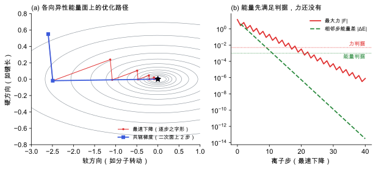

晶体的结构优化：原子与晶胞
解释晶体结构优化在优化什么、为什么要同时用力和应力、各种算法和收敛判据的区别，以及优化结果作为后续响应计算参考点时需要满足的条件。
直观阅读需要
- 梯度与极小值
- Hellmann–Feynman 定理：力与应力 里“力和应力是能量的一阶导数”
只是提示，不需要先读完才能往下看。
直觉直观解释
结构优化就是在势能面上找一个局部极小。晶体的变量有两组：原子坐标，以及描述晶胞形状和大小的晶胞矩阵。对应的梯度也有两组：原子上的力和晶胞上的应力，两者都可以由 Hellmann–Feynman 定理直接算出（见 Hellmann–Feynman 定理：力与应力）。
分子晶体的势能面很“各向异性”：键长方向非常硬，分子整体平移、转动和晶胞剪切方向非常软。在这样的面上，沿梯度直接下坡（最速下降）会来回之字形震荡；共轭梯度和拟牛顿方法利用前几步的信息修正方向，收敛快得多 [Payne et al. 1992] [Pfrommer et al. 1997]。
软方向还带来第二个问题：能量已经几乎不变了，力还没有小下来。只看能量判据会过早停下，留下残余力和残余应力。

| 符号 / 曲线 | 是什么 | 图里对应 |
|---|---|---|
| 软方向 | 曲率小的方向，例如分子转动或晶胞剪切 | (a) 横轴 |
| 硬方向 | 曲率大的方向，例如键长 | (a) 纵轴 |
| ★ | 能量极小 | (a) 原点 |
| \lvert F\rvert | 所有原子力分量里的最大值 | (b) 红线 |
| \lvert\Delta E\rvert | 相邻两个离子步的能量差 | (b) 绿色虚线 |
变量、梯度与判据数学与推导
把晶胞写成矩阵 h（三列是三个晶格矢量），原子分数坐标为 \mathbf s_i。能量 E(h,\{\mathbf s_i\}) 的两组梯度是：
其中 \mathbf r_i = h\,\mathbf s_i 是笛卡尔坐标；\Omega = \det h 是晶胞体积；\eta_{\alpha\beta} 是相对当前晶胞的应变；\sigma 是应力张量（符号约定见 弹性张量）[Nielsen & Martin 1985]。外加压强 p 时，优化的是焓 H = E + p\Omega，收敛条件变为 \sigma = -p\,I。
在本研究线里的样子对应与边界
ISIF：决定放开哪些自由度。ISIF = 2只优化原子、晶胞固定（但仍计算应力）；ISIF = 3同时优化原子、晶胞形状和体积 [VASP Wiki: ISIF]。变胞优化用 3；应变加 Berry 相的交叉检查在固定应变的晶胞里只弛豫原子，所以用 2。IBRION：选择算法。IBRION = 2是共轭梯度，IBRION = 1是拟牛顿（RMM-DIIS），IBRION = 3是阻尼分子动力学 [VASP Wiki: IBRION]。初始结构离极小较远时共轭梯度较稳；接近极小时拟牛顿较快。EDIFFG：负值表示力判据，单位 eV/Å，例如-0.01即最大力小于 0.01 eV/Å；正值表示能量差判据 [VASP Wiki: IBRION]。如上图所示，分子晶体应当用负值。- 对称性：VASP 默认保持初始结构的对称性，梯度被对称化，优化只在该空间群内进行。若真实极小对称性更低（例如分子取向有序化），对称化的优化会停在一个鞍点上。需要时加小扰动或降低对称性重新优化，并用声子检查（见 声子与晶格动力学）。
- Pulay 应力：变胞时平面波数目固定，有效截断能随体积变，应力有系统误差 [VASP Wiki: Pulay stress]。截断能取高，或优化后重启再优化（见 平面波基组与截断能）。
- 作为响应计算的参考点：弹性、压电的有限差分都是在“无力、无应力”的参考点附近展开的。残余应力会进入弹性常数，残余力会进入内应变项（见 弹性张量 和 有限差分与微扰方法）。所以后续计算用的设置（截断能、k 点、泛函、色散）应与优化一致，否则参考点在新设置下不再是极小。
- CSP 里的优化：常见做法是先用机器学习势预优化大量候选，再取低能候选做 DFT 优化。不同势能面上的极小不一定一一对应，DFT 优化可能使两个候选收敛到同一结构（去重见 晶体结构相似度与去重）。
常见坑对应与边界
- 用能量判据：
EDIFFG > 0在软的分子晶体上提前停止，残余力可以大到影响声子和响应计算。 NSW用完而不自知：优化步数上限到了，程序正常退出，但结构没有收敛。要检查最后一步的力和应力，而不只看任务是否结束。- 自洽不够紧：
EDIFF太松时力本身有噪声，优化在极小附近来回跳，达不到力判据。 - 只优化一次：大幅变胞后，基组按旧晶胞生成；从优化后的结构重启再优化一次，确认能量和晶胞不再变化。
检验自己对应与边界
参考资料
论文Pfrommer et al. 1997
尚未实际查阅，目前只是拟查阅书目
论文Payne et al. 1992
尚未实际查阅，目前只是拟查阅书目
官方文档VASP Wiki: ISIF
VASP Wiki, ISIF（结构优化时放开哪些自由度、是否计算应力）
尚未实际查阅，目前只是拟查阅书目
官方文档VASP Wiki: IBRION
VASP Wiki, IBRION（结构优化、有限差分与 DFPT 的选择）
尚未实际查阅，目前只是拟查阅书目
官方文档VASP Wiki: Pulay stress
VASP Wiki, Pulay stress（基组不完备导致的应力误差）
尚未实际查阅，目前只是拟查阅书目
论文Nielsen & Martin 1985
尚未实际查阅，目前只是拟查阅书目
分类数学工具 · 方法 · 研究线：压电与响应计算、结构预测与能量景观 · 状态：草稿